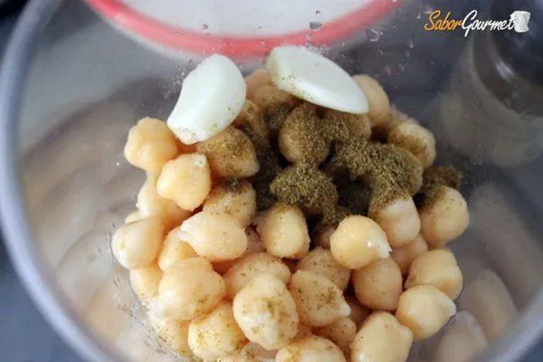

Esta receta hace hummus rápido y sabroso, sin ensuciar. Se ha adaptado de varias recetas diferentes que he leído a lo largo de los años.
Hummus es una deliciosa pasta espesa que se usa mucho en los platos griegos y del Medio Oriente. Es muy sabroso con ensalada, carnes a la parrilla y panes pitta.
| 175 g de tahini | 6 tomates secos | Medio pimiento rojo | Una pizca de pimienta de cayena | 1 diente de ajo | Una pizca de aceite de oliva |
Instrucciones
|
Refrigere el hummus terminado en un recipiente sellado. Debería poder usarlo durante aproximadamente una semana después de haberlo hecho. Si comienza a burbujear, definitivamente debes descartarlo. Hummus es adecuado para congelar; debe descongelarlo y usarlo dentro de un par de meses. |